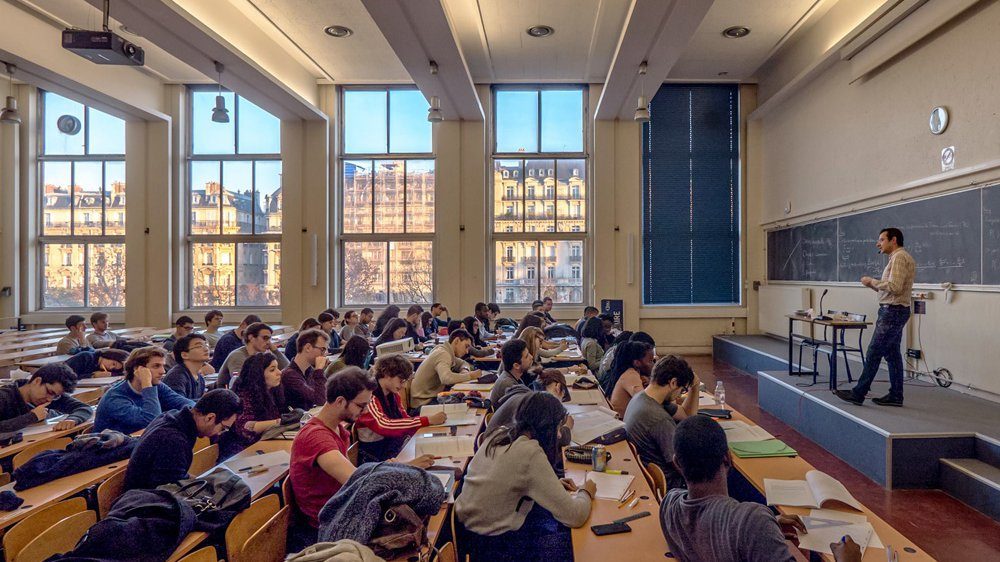
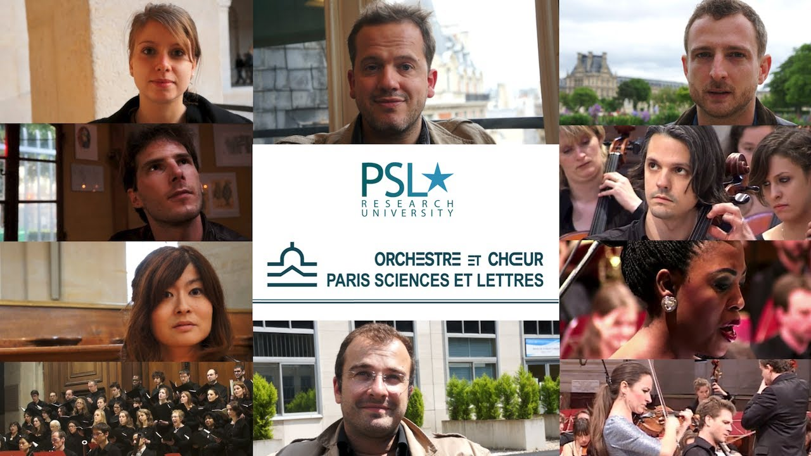

USA is one of the innovational and developing countries in the world
Harvard University
What is a Harvard University?
The university is organized into eleven separate academic units—ten faculties and the Radcliffe Institute for Advanced Study—with campuses throughout the Boston metropolitan area: its 209-acre (85 ha) main campus is centered on Harvard Yard in Cambridge, approximately 3 miles (5 km) northwest of Boston; the business school and athletics facilities, including Harvard Stadium, are located across the Charles River in the Allston neighborhood of Boston and the medical, dental, and public health schools are in the Longwood Medical Area. Harvard's $34.5 billion financial endowment is the largest of any academic institution. Harvard is a large, highly residential research university. The nominal cost of attendance is high, but the university's large endowment allows it to offer generous financial aid packages. It operates several arts, cultural, and scientific museums, alongside the Harvard Library, which is the world's largest academic and private library system, comprising 79 individual libraries with over 18 million volumes. Harvard's alumni include eight U.S. presidents, several foreign heads of state, 62 living billionaires, 359 Rhodes Scholars, and 242 Marshall Scholars. To date, some 130 Nobel laureates, 18 Fields Medalists, and 13 Turing Award winners have been affiliated as students, faculty, or staff.
Video
Paris Sciences & Lettres is a young institution, created in 2010 through the leadership of schools and research institutions themselves steeped in rich, centuries-old history. PSL’s institutions, international in scope since their very beginnings, wanted to unite to more fully harness the academic adventure of the 21st century.
Gallery
|  |  |